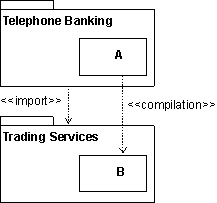
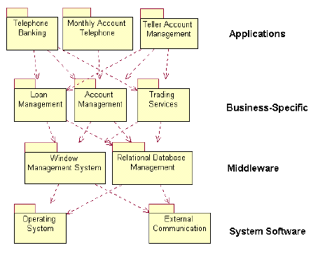

| Guideline: Import Dependency in Implementation |
 |
|
| Related Elements |
|---|
ExplanationHandling dependencies between subsystems is an important aspect of structuring the implementation model. A element in a client subsystem can only compile against elements in a supplier subsystem, if the client subsystem imports the supplier subsystem. To express such dependencies use the import dependency from one subsystem to another, to point out the subsystem on which there is a dependence. Example: The following component diagram illustrates the import dependencies between implementation subsystems.
 The subsystem Telephone Banking has an import dependency to the subsystem Trading Services, allowing elements in Telephone Banking to compile against public (visible) elements in Trading Services. UseArchitectural ControlAn important usage of the import dependency is to control the visibility between subsystems, and to enforce an architecture on the implementers. When the import dependency is defined by the software architect early in the development, the implementers are only allowed to let their implementation elements reference (compile against) public elements in the imported subsystems. Controlling the imports helps maintain the software architecture and avoids unwanted dependencies. Subsystems Can Be Organized in LayersThe implementation model is normally organized in layers. The number of layers is not fixed, but vary from situation to situation. The following is a typical architecture with four layers:
 An example of a layered implementation model for a banking system. The arrows shows import dependencies between subsystems. |
© Copyright IBM Corp. 1987, 2006. All Rights Reserved. |